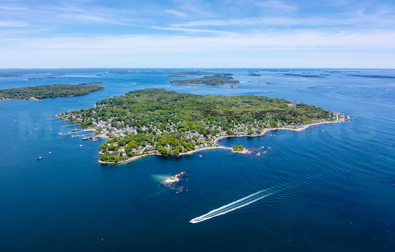
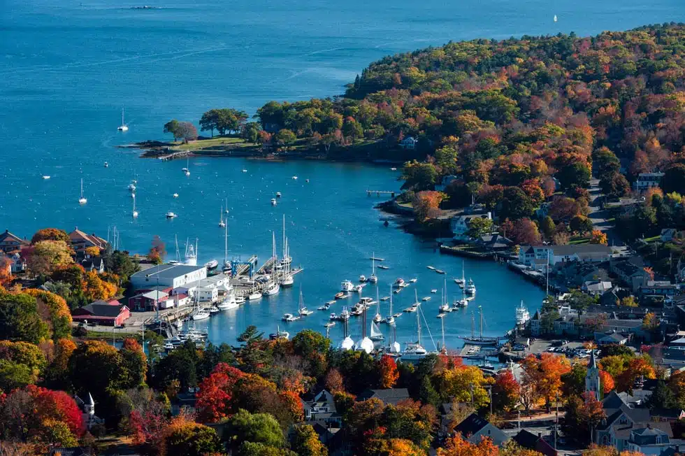
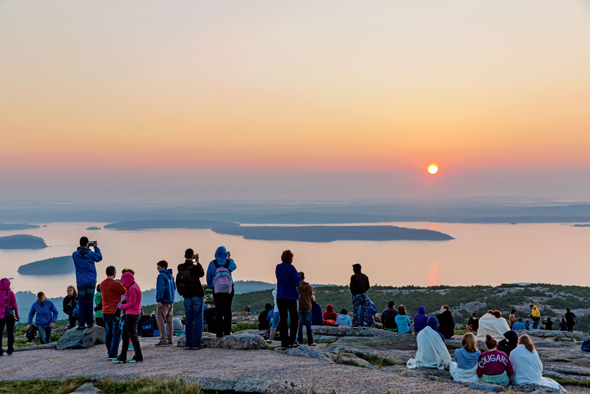
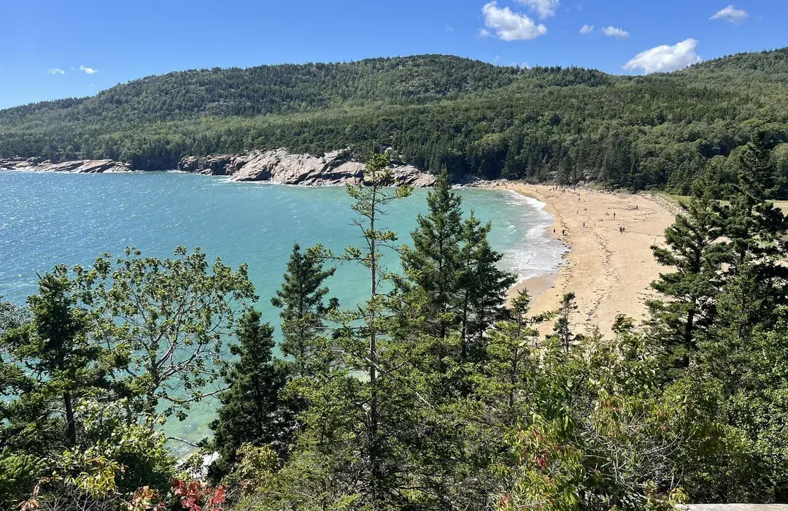

Goldsberry Family Trip to Maine 2026
Lodging
| Dates | Hotel | Address |
|---|---|---|
| Jul 31 – Aug 2 | Hampton Inn Portland Downtown-Waterfront | 209 Fore Street, Portland, ME 04101 |
| Aug 2 – Aug 7 | Atlantic Oceanside Hotel | 119 Eden Street, Bar Harbor, ME 04609 |
Reserve Before You Go
Book these ahead of time — some sell out months in advance, especially during peak summer.
-
1
Peaks Island golf cart rental Reserve a golf cart for exploring Peaks Island on Day 2. Carts go quickly on summer weekends.
-
2
Cadillac Summit Road vehicle reservation Required for Day 4 sunrise. Reservations release on a 90-day rolling window plus additional 2-day releases — set a reminder and book as soon as your date opens.
-
3
Long Pond canoe or kayak National Park Canoe & Kayak Rentals, 145 Pretty Marsh Road, Mount Desert. Reserve for Day 6 — 3-hour, 6-hour, or full-day options.
-
4
Lobster fishing & seal-watching cruise Bar Harbor Whale Watch on Day 7. Book early; bring jackets and arrive ahead of departure time.
-
5
Acadia National Park entrance pass Vehicle pass covers the whole family for 7 days. Separate from the Cadillac Summit Road reservation.
-
6
Maine fishing license (adults) Needed for Day 6 paddling and fishing on Long Pond. Kids under 16 are exempt.
Trip at a Glance
| Day | Date | Theme | Sleep |
|---|---|---|---|
| Day 1 | Fri, Jul 31 | Arrive Portland | Portland |
| Day 2 | Sat, Aug 1 | Old Port + Peaks Island + Eastern Promenade | Portland |
| Day 3 | Sun, Aug 2 | Portland → Camden → Mount Battie → Bar Harbor | Bar Harbor |
| Day 4 | Mon, Aug 3 | Cadillac sunrise + Ocean Path + Gorham | Bar Harbor |
| Day 5 | Tue, Aug 4 | South Bubble + Jordan Pond + optional Bar Island | Bar Harbor |
| Day 6 | Wed, Aug 5 | Long Pond + quiet side of the park | Bar Harbor |
| Day 7 | Thu, Aug 6 | Great Head + lobster cruise | Bar Harbor |
| Day 8 | Fri, Aug 7 | Departure | — |
Day-by-Day
Day 1 · Fri, Jul 31
Arrive Portland
Late arrival, check in, and a gentle Old Port stroll if energy allows.

Day 2 · Sat, Aug 1
Peaks Island & Eastern Prom
Ferry adventure, golf cart loop, tide pools, and sunset on the promenade.

Day 3 · Sun, Aug 2
Camden & Bar Harbor
Scenic drive, Mount Battie summit views, and check-in at Atlantic Oceanside.

Day 4 · Mon, Aug 3
Cadillac & Ocean Path
Pre-dawn summit, Thunder Hole, Otter Cliff, and optional Gorham Mountain.

Day 5 · Tue, Aug 4
Bubbles & Jordan Pond
Bubble Rock, lakeside paths, popovers, and optional Bar Island at low tide.

Day 6 · Wed, Aug 5
Long Pond & Quiet Side
Paddle the pond, then explore Wonderland, Ship Harbor, or Bass Harbor Light.

Day 7 · Thu, Aug 6
Great Head & Lobster Cruise
Coastal trail loop and an afternoon on the water pulling traps and watching seals.

Day 8 · Fri, Aug 7
Departure
Easy morning checkout and the drive back to Portland with time built in.
Weather Backup Strategy
Maine coastal weather shifts quickly. If rain or fog rolls in, swap outdoor plans for these alternatives without losing the day.
| Original Plan | Backup Option | Notes |
|---|---|---|
| Peaks Island golf cart (Day 2) | Portland Museum of Art or Children's Museum | Indoor options downtown; still walk Old Port between showers. |
| Mount Battie drive (Day 3) | Camden downtown shops & harbor walk | Skip summit if fogged in — harbor still charming. |
| Cadillac sunrise (Day 4) | Sleep in; afternoon Jordan Pond or Sieur de Monts | Reschedule summit for another clear morning if possible. |
| Ocean Path hike (Day 4) | Abbe Museum or Bar Harbor shops | Trail can be slippery when wet — prioritize safety. |
| South Bubble hike (Day 5) | Jordan Pond House popovers + partial pond path | Steep rock is treacherous in rain — skip the summit. |
| Long Pond paddle (Day 6) | Wonderland or Ship Harbor (shorter, sheltered) | Cancel paddling if lightning; trails still workable in light rain. |
| Great Head trail (Day 7) | Beehive only if dry; otherwise lobster cruise still runs | Cliff trails unsafe when wet — cruise is the anchor activity. |
| Lobster cruise (Day 7) | Reschedule with operator or Bar Harbor Whale Watch nature tour | Call ahead — tours may cancel in heavy seas. |